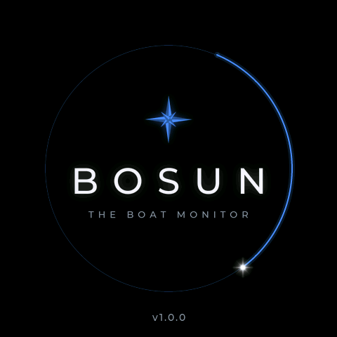

Bosun – the boat monitor
Install Bosun on your ESP32-S3 touchscreen straight from this page. No software to install, no compiling. Zet Bosun rechtstreeks vanaf deze pagina op je ESP32-S3-touchscreen. Niets installeren, niets compileren.
1 Connect and installAansluiten en installeren
- Connect the Waveshare ESP32-S3-Touch-LCD-4 to this computer with a USB-C cable that carries data (not a charge-only cable).
- Sluit de Waveshare ESP32-S3-Touch-LCD-4 met een USB-C-kabel aan op deze computer. Gebruik een kabel voor data, geen laadkabel.
- Click Install Bosun, pick the port (usually "USB JTAG/serial debug unit") and confirm.
- Klik op Bosun installeren, kies de poort (meestal "USB JTAG/serial debug unit") en bevestig.
- Wait until it says the installation is complete (about 1 to 2 minutes), then press the reset button or unplug and replug the board.
- Wacht tot er staat dat de installatie klaar is (1 à 2 minuten). Druk daarna op de resetknop, of haal de kabel eruit en sluit hem opnieuw aan.
Works in Chrome or Edge on a computer (Windows, macOS, Linux, ChromeOS). Not on phones or in Safari and Firefox. Werkt in Chrome of Edge op een computer (Windows, macOS, Linux, ChromeOS). Niet op telefoons en niet in Safari of Firefox.
? Good to knowGoed om te weten
- First install: choose Erase device when asked. Bosun then starts with a clean memory and asks for your language.
- Eerste keer: kies Erase device als daarom gevraagd wordt. Bosun begint dan met een schoon geheugen en vraagt om je taal.
- Updating: do not erase. Your devices, Victron keys and settings stay. Updating over WiFi through Bosun's own web page also works (see below).
- Bijwerken: wis het geheugen niet. Je apparaten, Victron-sleutels en instellingen blijven dan staan. Bijwerken via wifi met de eigen webpagina van Bosun kan ook (zie hieronder).
- No port shown? Hold the BOOT button, press and release RESET (or plug in the cable), then release BOOT and try again.
- Geen poort te zien? Houd de knop BOOT ingedrukt, druk kort op RESET (of steek de kabel erin) en laat BOOT dan los. Probeer het daarna opnieuw.
- Make a backup first if Bosun already runs: WiFi page → Settings backup.
- Maak eerst een backup als Bosun al draait: wifi-pagina → Backup van de instellingen.
↻ Update over WiFiBijwerken via wifi
Download the update file, turn on the WiFi page on the screen and upload it under Firmware update. The board checks that the file belongs to it. Download het updatebestand, zet op het scherm de wifi-pagina aan en upload het bij Firmware-update. Het board controleert of het bestand bij hem hoort.